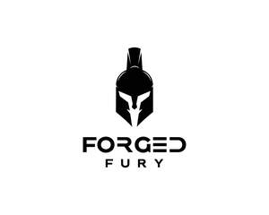

Trade Mark Journal No.2025/048 28 November 2025
UK00004272716 2 October 2025 (21,25,28)

- Class 21
- Bottles; Sports bottles [empty]; Drinking bottles for sports; Drinking bottles; Sports bottles sold empty; Water bottles sold empty; Insulated bottles [flasks]; Bottles (Refrigerating -); Bottle coolers [receptacles]; Aluminum water bottles; Shaker bottles sold empty.
- Class 25
- Boxing shorts; Boxing shoes; Martial arts uniforms; Clothing for martial arts; Boxer briefs; Gym shorts; Gymwear; Clothes for sport; Gym suits; Gym boots; Jogging outfits; Jogging shoes; Jogging pants; Exercise wear; Athletic clothing; Clothes for sports; Clothing for sports; Sports clothing; Gloves [clothing]; Gloves as clothing; Men's clothing; Casual clothing; Hoodies; Sweatshirts; Hooded sweatshirts; Hooded sweat shirts; T-shirts; Hooded pullovers; Tank-tops; Fleece pullovers; Sports wear; Pullovers; Sportswear; Caps; Sports caps; Baseball caps; Baseball caps and hats; Caps [headwear]; Caps being headwear.
- Class 28
- Boxing gloves; Gloves (Boxing -); Boxing rings; Punching balls for boxing; Punching bags for boxing; Karate gloves; Punching balls [for boxing practice]; Taekwondo mitts; Sparring gloves; Martial arts training equipment; Belts for weightlifting; Kick pads for martial arts; Cages for mixed martial arts; Gloves for sports; Leg weights for sports training; Gym balls for yoga; Shin guards [sports articles]; Karate shin pads; Karate kick pads; Fist guards [sporting articles]; Protective vests for martial arts; Belts (Weight lifting -) [sports articles]; Weight lifting belts [sports articles]; Taekwondo kick pads; Leg weights [sports articles]; Elbow guards [sports articles]; Kettlebells; Shin protectors [sports articles]; Shin guards for sports use; Chest protectors adapted for playing the sport of taekwondo; Abdominal wheel rollers for fitness purposes; Ankle and wrist weights for exercise; Wrist and ankle weights for exercise; Finger stretching resistance bands; Exercise bands; Wrist straps for weightlifting; Exercise hand grippers; Weight lifting gloves; Sports equipment; Indoor fitness apparatus.
Forged Fury Ltd